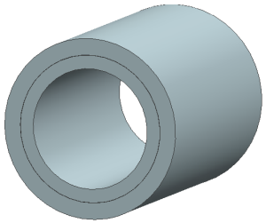
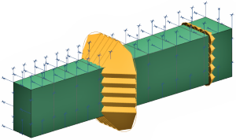
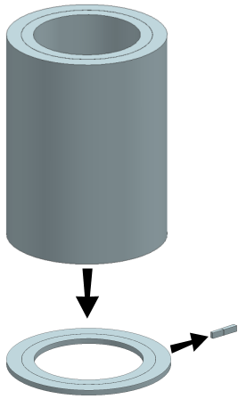
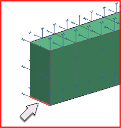
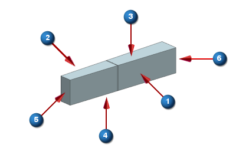
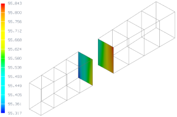

Contact analysis project
The Surface-to-Surface Contact feature in Advanced Simulation can be used to resolve interference between parts. For example, consider shrink-fit construction of a cylindrical pressure vessel. The cylinders are fabricated in such a way that they interfere when at a common temperature. The interference is overcome by heating the outer cylinder. The resulting thermal expansion allows the outer cylinder to slip over the inner cylinder. As the outer cylinder cools, it shrinks onto the inner cylinder, creating a contact pressure at the interface. The contact pressure produces residual stresses, which enable the pressure vessel to withstand higher operating pressures.
Objective
At room temperature, two cylinders have a 0.15 mm radial interference. Use the SOL 101 Linear Statics - Global Constraints solution sequence to find the contact pressure that arises at the interface when the outer cylinder is shrink fit onto the inner cylinder. Assume the ends of the pressure vessel are fixed so that axial displacement cannot occur.

Required data
|
Property |
Value |
|
Part |
shrink_fit.prt |
|
Solution sequence |
SOL 101 Linear Statics - Global Constraints |
|
Idealization |
See note regarding axisymmetry See note regarding plane strain |
|
Material |
Steel |
|
Mesh |
CHEXA20 |
|
Constraints |
See notes regarding surface-to-surface contact |
|
Loads |
None |

Notes
Although SOL 101 Linear Statics - Global Constraints supports Edge-to-Edge Contact in axisymmetric structural modeling, use geometry idealization, constraints, and Surface-to-Surface Contact to create the model.
-
Idealize the cylinder as a wedge.
-
Apply constraints to the wedge that force it to behave in an axisymmetric fashion.
-
Define Surface-to-Surface Contact between the inner and outer portions of the wedge.
Because the ends of the pressure vessel are fixed, it is unnecessary to model the entire length of the wedge. Modeling a representative slice of the wedge is sufficient. By constraining axial displacements, the model will mimic plane strain.
To create this model:
-
Open the part file and start Advanced Simulation. Create FEM and Simulation files. Be sure to create an idealized part file when doing so.
-
After displaying the idealized part, use the Promote command to promote the bodies in the idealized part.
-
Use the Split Body command to create a 5 mm thick wedge having an angular sweep of 3° as shown below.

-
Display the FEM file and turn off the unused polygon bodies to isolate the wedge.
-
Create a mesh collector.
-
Use the Mesh Control command to specify four elements through the radial thickness of each wedge and one element through the depth and transverse thickness of each wedge.
-
Use the 3D Swept Mesh command to mesh both wedges. Assign both meshes to the mesh collector you created.
-
After making the Simulation file the displayed part, constrain all DOF normal to the RZ-planes to enforce axisymmetry. To enforce plane strain, constrain all DOF in the axial direction throughout the model.
-
Select the User Defined Constraint command.
-
Select the two polygon faces comprising plane
 in the illustration below.
in the illustration below.
-
From the Displacement CSYS list, select Cylindrical. Click CSYS of Object and select the edge indicated below.

-
Set the DOF normal to plane
and in the axial direction to Fixed.
-
Repeat for plane
 in the illustration below.
in the illustration below.
-
-
Constrain all the remaining DOF in the axial direction to complete enforcing plane strain.
-
Select the User Defined Constraint command.
-
Select the polygon faces comprising planes
 ,
, , , and .
, , and .
-
To avoid conflicting constraints, exclude from the selection edges where constraints are already applied.
-
Set the DOF in the axial direction to Fixed.
-
In the following illustration:
-
is the visible RZ-plane.
-
is the hidden RZ-plane.
-
is the visible RΘ-plane.
-
is the hidden RΘ-plane.
-
is the visible ΘZ-plane.
-
is the hidden ΘZ-plane.

Because of the interference condition, normals to the contacting regions point in opposing directions. By specifying a negative Min Search Distance when defining Surface-to-Surface Contact, the software searches for contact in the opposite direction of the normals.
The default settings do not request contact pressure results. Edit the solution to enable contact pressure output. In the Solution dialog box, under the Case Control tab, click Create Modeling Object (Output Requests). In the Structural Output Requests dialog box, under the Contact Result tab, select Enable BCRESULTS Request.
Expected Results
A contour plot of contact pressure (in MPa) is shown below.

Completed project
For your reference, a completed model for this project is located in the ..\projects\solved_project_models folder.